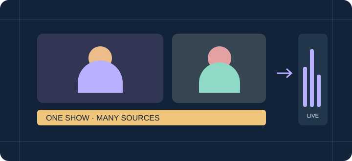

Picture quality · bandwidth · performance
The encoder
field guide.
A better-looking show. A sensible upload budget.
Settings for interviews, podcasts, gaming shows and vertical streams. Choose the picture you need and leave capacity for guests, overlays and recording.

H.264 · 0 B-frames · ~1 s keyframes · 128 kbps audio.
Hardware first. Keep your microphone off until you need it.
01 / Choose the picture
What are you streaming?
Choose a useful starting point, then adjust for your actual source and connection.
| Your application | Quality priority | Resolution / FPS | Video bitrate |
|---|---|---|---|
| Interviews / podcastsStart here | Balanced | 1280 × 72030 fps | 3 Mbps3,000 kbps |
| Product demos / slidesReadable text | More detail | 1920 × 108030 fps | 4.5 Mbps4,500 kbps |
| Gaming / fast movement60 fps | Motion first | 1280 × 72060 fps | 4 Mbps4,000 kbps |
| Detailed action showHardware preferred | Detail + motion | 1920 × 108060 fps | 6 Mbps6,000 kbps |
| Vertical live / shopping9:16 | Portrait | 720 × 128030 fps | 3 Mbps3,000 kbps |
| Detailed vertical demoMore pixels | Portrait detail | 1080 × 192030 fps | 4.5 Mbps4,500 kbps |
| Weak upload / light PCSmall picture | Bandwidth saver | 960 × 54030 fps | 1.5 Mbps1,500 kbps |
Bitrate is a video target, not an upload cap. Changing resolution does not automatically change it. Portrait uses the same starting budget as landscape with the same pixel count. Guest returns and multiple VDO.Ninja viewers add traffic; count them separately.
02 / Choose the engine
Let hardware do the work.
Keep Auto unless you have a reason to select a specific GPU or compare a problem.
H.264 Baseline / Constrained Baseline8-bit · 4:2:0 · SDR
| Encoder | App policy / starting settings | What to avoid or check |
|---|---|---|
| AutoStart here · Windows | Available hardware H.264, then software fallback. | Check the active encoder after starting. Auto does not promise one particular GPU. |
| NVIDIA NVENC | P4 · low latency · CBR Single pass; lookahead 0; AQ off. | Keep B-frames at 0. Do not copy a high-latency P7 / multipass streaming recipe into this live pipeline. |
| AMD AMF | Balanced · low latency · CBR Async depth 1; forced IDRs. | Keep B-frames at 0. H.264 profile name is constrained_baseline in FFmpeg AMF. |
| Intel Quick Sync | Veryfast · async depth 1 H.264 lookahead off. | Keep B-frames at 0. Leave the app’s D3D11 upload policy in place. |
| Windows SoftwareMedia Foundation | Low complexity · CBR 1–4 encoder workers, capped at half the logical CPUs. | This is not x264. Try 720p30 if the source app competes for CPU. |
| Custom FFmpeg x264Optional external build | Veryfast · zerolatency 1–4 workers; B-frames 0. | Use only with a suitable user-supplied FFmpeg build. Do not assume the bundled Windows Software option selects it. |
Common policy: 0 B-frames, approximately one-second keyframes (30 frames at 30 fps; 60 at 60), and no configured lookahead. Native Media Foundation requests Baseline and zero B-frames. Driver support varies. Most controls above are managed by the app; do not paste arbitrary FFmpeg flags into a native encoder.
Explicit NVIDIA, AMD, Intel or Software selections are strict: a failed choice is reported rather than silently replaced. A thread cap limits parallelism, not total CPU use. More expensive presets need their own playback and workload checks.
03 / Keep playback compatible
WHIP without the guesswork.
The publisher, service and viewer must agree. Start with the simplest live path.
Keep these
- H.264 + Opus, 48 kHz, 128 kbps. Stereo for games/music; mono is an option for speech.
- No B-frames or lookahead. Let the app keep its live timestamp ordering.
- Baseline-compatible output, regular keyframes, and a bitrate the connection can sustain.
- The service’s publish URL. Test video and audible sound in its actual viewer.
Avoid these surprises
- Do not paste an RTMP URL or a WHEP viewing URL into the WHIP publisher.
- Do not force High profile, 10-bit, HDR, 4:4:4, HEVC or AV1 without explicit receiver support and playback checks.
- Do not substitute PCM or AAC for Opus just because another output accepts it.
- Do not assume “connected” means the service’s player has decoded a frame.
These are compatibility recommendations for this app, not a claim that WHIP bans all other profiles/codecs. WHIP negotiates WebRTC media; it is not a universal encoder preset. WHIP specification · WebRTC video requirements
| Transport / recovery | Starting point | Meaning |
|---|---|---|
| WHIP / WebRTC packetization | 1,200-byte codec fragment | RTP/SRTP, UDP/IP and RTX add bytes. This is not an IP packet size. |
| WHIP repair / smoothing | 1,500 ms history / 500 ms hint | NACK requests lost packets; RTX carries repairs; PLI asks for a keyframe. Support is negotiated. The viewer may ignore the delay hint. |
| Audio RED / FEC | RED offered when supported | RED repeats audio and adds traffic. No implemented video FEC or Opus in-band FEC; no universal error-correction percentage. |
| SRT / RIST / UDP | 1,316-byte TS payload | SRT/RIST start with 200 ms recovery buffering. Increase for RTT or burst loss; UDP alone has no retransmission recovery. |
| RTMP(S) / RTSP | H.264 + AAC | RTSP defaults to TCP and 1,200-byte muxer packets. RTMP has no comparable UDP packet-size knob. |
04 / Know the cost
What does encoding use?
Measured app costs, with the workflow and limits kept visible.
Core Ultra 7 265K · 20 logical CPUs · NVIDIA TITAN RTX · AMD RX 9060 XT · Intel integrated Graphics. Sequential, synthetic-source Windows candidate runs; publisher affinity limited to CPUs 0–9.
| Setup | Avg CPU¹ | Avg GPU codec engine² | Avg RAM MiB | Rx fps |
|---|---|---|---|---|
| Windows Software720p30 · publish | 3.45% | —CPU encoder | 318 | 30.00 |
| NVIDIA NVENC720p30 · publish | 2.85% | 8.8%VideoEncode | 459 | 29.90 |
| Intel Quick Sync720p30 · publish | 3.29% | 5.5%VideoDecode | 433 | 29.80 |
| Different workflow | Avg CPU¹ | Avg GPU codec engine² | Avg RAM MiB | Rx fps |
|---|---|---|---|---|
| Auto + recording720p30 · landscape | 4.38% | —not attributed | 535 | 30.00 |
| AMD + recording720p30 · landscape | 4.25% | 5.8%Video Codec Engine | 510 | 29.80 |
| AMD + recording720 × 1280 · 30 fps | 4.52% | 5.9%Video Codec Engine | 516 | 29.80 |
| Auto / headless capture720p30 · UDP | 1.60% | —not attributed | 270 | 30.00 |
| AMD / headless capture720p30 · WHIP exception† | 1.08% | 5.8%Video Codec Engine | 222 | 30.13 |
1 / CPU is a share of the whole machine. 5% equals one logical CPU’s occupancy on this 20-thread PC. Bars use a 0–5% scale. Includes the app and owned workers; excludes the source browser and receiver. It is not spare capacity guaranteed during a game.
2 / GPU numbers are one physical codec engine. They exclude other GPU work and cannot be added or compared as total GPU utilization. Intel’s driver names its encoder-associated counter “VideoDecode”. Missing attribution is not 0% load. Software encoding still needs GPU work for capture/display.
† The marked WHIP relay recording failed the strict timestamp check. Read the retained exception and measurement limits →
05 / Match the production
One stream is only the start.
Codecs, recording and extra sources change both compatibility and workload.
| Mode | Use it for | Keep in mind |
|---|---|---|
| H.264 / SDR | The everyday recommendation. | Use for normal WHIP, RTMP, SRT and VDO.Ninja output. 8-bit 4:2:0 is the compatibility starting point. |
| AV1 / HEVC | A destination and viewer you have explicitly qualified. | Hardware support differs by GPU generation. Encoding successfully does not prove the service or browser can decode it. Network output modes may constrain the codec. |
| VP9 / transparency | Specialized VDO.Ninja / compatible OBS plugin workflows. | Dual-track alpha encodes both color and transparency. Keep protected all-keyframe synchronization; do not disable it to save CPU. Ordinary WHIP/RTMP output is H.264 without alpha. |
| Software AV1 / HEVC | An advanced opt-in with CPU to spare. | AV1 uses realtime / cpu-used 8; x265 uses veryfast + zerolatency with bounded workers. HEVC playback is not qualified by this defaults review. |
For a vertical show, choose a portrait canvas, arrange your sources within it, then check the service’s player on a phone. Keep 30 fps for most interviews; a 60 fps camera does not require a 60 fps show.

06 / Before you go live
Give the whole show a rehearsal.
Use the exact destination, source content and recording setup you will depend on.
Set the format
Choose your recipe, then confirm resolution, frame rate and bitrate. Open Output settings for the destination and check the Program format selector.
Check the real workload
Enable every camera, overlay, guest return and recording you plan to use. Check active encoder, frame cadence and dropped-frame counters.
Listen and watch remotely
Open the actual audience player. Confirm moving video, audible sound, stereo/mono as intended, and speech in sync. A local preview does not prove received playback.
Rehearse a reconnect
Stop and restart publishing before the event. Check a late-joining viewer and any local recording. Keep stream credentials out of shared screenshots and logs.
Change one thing at a time
Save a known-good setup before experimenting. Compare the same scene at the same resolution and bitrate. Watch the received picture and frame pacing as well as the load meters.
Give your receiver enough time to start. A keyframe interval is not a time-to-first-picture promise: network negotiation, the server and the player also affect startup.
07 / Read the numbers fairly
Evidence, with its limits.
Measured results help you choose. They do not replace a rehearsal on your own computer.
RAM is summed process RSS, which can double-count shared pages. Rx fps is decoded recording cadence, not glass-to-glass latency. These are short functional runs, not matched perceptual-quality or thermal benchmarks.
The evidence snapshot
October 18, 2026 unreleased Windows candidates based on Game Capture 0.2.64 and Desktop Studio 0.9.2. All 15 H.264 workflows in the shared review delivered video/audio; 13 passed strict decoded-file and monotonic-timestamp checks. Two startup relay exceptions remain. Independent Studio recordings passed with no reported queue drops. No demanding-game, physical lip-sync, WAN-loss, HDR or all-browser guarantee is inferred.
Recommended resolution/bitrate tiers are editorial starting points. The resource table reports measured runs; there is no invented quality score or cross-vendor winner. Future versions, drivers, scenes and machines can behave differently.